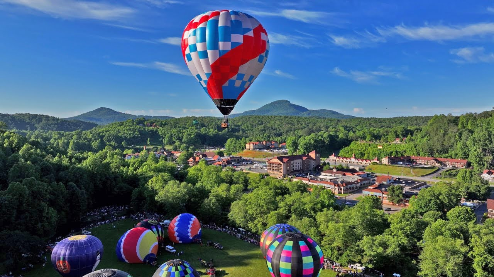

Welcome to Helen, Georgia
Welcome to Helen: Nestled in the heart of the North Georgia mountains, Helen is a charming town known for its unique Bavarian-inspired architecture and breathtaking natural beauty. With a rich cultural scene, vibrant festivals, and outdoor adventures, Helen offers a delightful escape for visitors of all ages.
Key Attractions
- Bavarian Village: Stroll through our picturesque streets lined with quaint shops, restaurants, and breweries. Experience authentic German cuisine and festivals throughout the year.
- Outdoor Activities: Enjoy hiking, rafting, and horseback riding in the nearby Chattahoochee National Forest. Don’t miss the beautiful Anna Ruby Falls and the scenic trails around Unicoi State Park.
- Festivals & Events: Helen hosts numerous events, including Oktoberfest, the Christmas Market, and the Helen to the Atlantic Balloon Race. There’s always something happening!
- Historic Sites: Explore the history of Helen with visits to the local museum, historic churches, and nearby landmarks that tell the story of this charming town.